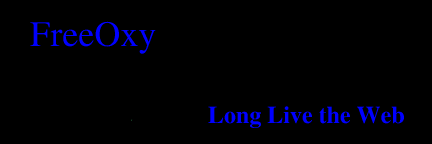

|  |
What is FreeOxy?
FreeOxy is a tool designed to prevent
censorship of the World Wide Web. Using FreeOxy, any individual may
view content on the web, regardless of any filtering mechanism which
may lie between the individual's web browser and the desired
content. In addition FreeOxy is designed to prevent the creation of
browse histories for any individual and to provide a degree of
plausible deniability so that the user is protected (at least in
theory) from legal repercussions which might otherwise result from
the viewing of politically dissident material, for instance.
FreeOxy is a scalable, robust solution that is resistant to
blocking. In order to block FreeOxy, a malicious agent would need
to discover and block all the current FreeOxy servents at once.
FreeOxy was designed to make this task very difficult, if not
impossible.
Long Live the Web.
Where can I get FreeOxy?
Because its authors feel that a tool such as FreeOxy should be used to its fullest extent, the FreeOxy source code is made available for download on this very website. Just click here to download a JBuilder project containing the source.
How do I use FreeOxy?
FreeOxy is very easy to use. Simply download the application and unzip into a directory of your choosing. Next run RunFreeOxy.bat. If you encounter any problems starting the program, make sure that the PATH environment variable contains the location of your SDK installation in it. Once the program starts, enter the IP address of the interface on which FreeOxy should listen for other peers to connect. Also, enter the port number on which FreeOxy should listen to your web browser. If desired, enable paranoid mode (the FreeOxy peer will never attempt to fetch any webpages itself if it is paranoid mode) and then simply press the button labelled "Start".
How does FreeOxy work?
FreeOxy works by forwarding a request randomly through the network of FreeOxy peers until a peer is reached which can satisfy the request. For further details of the design and implementation, see our design document, which is located here.